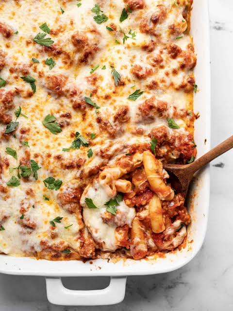

Baked ziti

Description
This classic baked ziti is the ultimate Italian-American comfort food. It packs all the rich flavors of a
traditional meat lasagna—savory Italian sausage, protein-rich ricotta, and an abundance of melted mozzarella
cheese—but uses tubular ziti pasta to cut down on assembly time, making it an ideal choice for a cozy weeknight
dinner.
Ingredients
- 1 pound ziti pasta
- 1 pound Italian sausage (or ground beef)
- 1 (32 ounce) jar marinara sauce
- 15 ounces ricotta cheese (or cottage cheese)
- 2 cups shredded mozzarella cheese, divided
- ½ cup grated Parmesan cheese
- 1 egg
- 1 teaspoon dried Italian seasoning
- Salt and pepper to taste
Directions
- Preheat oven to 375°F (190°C). Grease a 9x13-inch baking dish.
- Bring a large pot of salted water to a boil. Cook ziti pasta until slightly under al dente (about 2 minutes
less than package instructions), then drain.
- Meanwhile, heat a large skillet over medium-high heat. Brown the Italian sausage, breaking it apart into
crumbles for 8 to 10 minutes. Drain any excess grease.
- Pour the marinara sauce into the skillet with the meat and let it simmer for 5 minutes.
- In a separate bowl, mix together the ricotta cheese, egg, Italian seasoning, Parmesan cheese, and half of
the mozzarella cheese.
- Combine the cooked pasta, meat sauce, and cheese mixture in a large bowl, stirring gently until everything
is evenly coated.
- Transfer the mixture into the prepared baking dish and even out the top.
- Sprinkle the remaining mozzarella cheese evenly across the top.
- Bake uncovered for 20 to 25 minutes, until the cheese is melted and bubbling at the edges. Let cool for 5
minutes before serving.